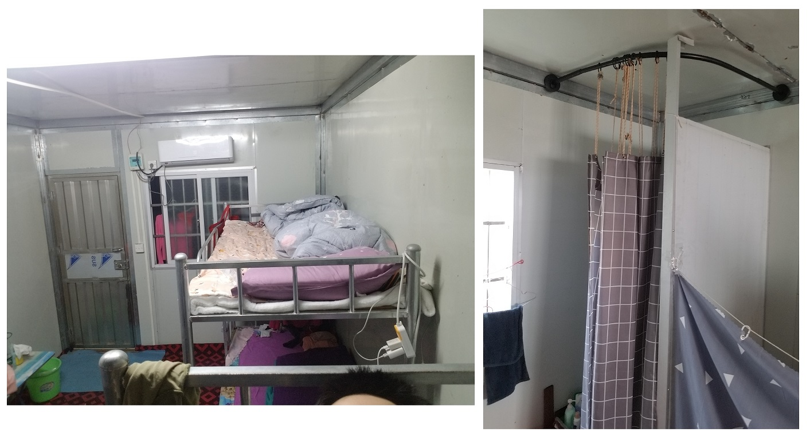

淘菜菜日结散工生存录
三月，正是季节更替的时候。然而，在疫情期间，旅行就像冒险。于是我另辟蹊径，在年假期间，以“炒散”的方式，充盈自己的日子。
说做就做。在招聘app搜索一番，最后选择了时薪相较其他日结兼职都高，且包住宿的「淘菜菜仓库分拣员」，添加了人力中介的微信，相约面试地点与时间。
第二天一大早起床，先是坐了2个多小时的公交车前往面试现场。到达后才发现发现仓库位于一个超大型的物流园里，从物流园正门步行至淘菜菜分区居然要耗时20分钟！
其实说是面试，实际到达后人力中介并没有问我来历过去之类长短三四的话题。只是拿出一沓劳务合同，分发给会客厅里连我在内的许多求职者，并特意说明了条款中关于工资的主要事项：做满3天才有20元的时薪，否则按16/时结算。
压上指模，签下名字，领取“湘建人力”小马甲。我的外包临时工生活正式开启。
作为一名分拣员，我一天的行程是这样的：
1.下午3点打卡上班后，领取一台绑定了我的ID的手持PDA终端扫码器。在工作的过程中，我要确保这个扫码器的妥善，否则需要赔钱（700元）。
- 在手持PDA终端上领取组织派发的任务。一个任务完成后，领取下一个再继续，直到暂时没有任务、或中休或下班。就我个人体验而言，所谓分拣工作和做苦力是没有太大区别的。如下图所示，分别是我领取的其中两个任务的工作量：A - 52箱广氏菠萝啤+68担水+5箱纸巾。B - 56袋大米+12箱方便面。

在偌大的中心仓内来来回回，一天下来，除了手机自顾自记录的步数，我对自己的当天任务完成量早已记不清楚了。

- 中休时间多在下午5~7点，大家分批前去吃饭。在打卡出仓20米左右的距离，就有一个饭堂，一份快餐10元，白饭和汤不限量。不知道是否因为我长得比较男孩子气，容易让人留下印象。自打第二次去饭堂开始，打饭阿姨都会帮我乘上满满一盒菜。
实际上，一天的体力活下来，这样的白饭量，我一次至少要吃上两盒，才有力气继续开工干活和在结束工作后睡个好觉。

如果吃腻了淘菜菜中心仓内的饭堂快餐，还可以选择走远一点，尝试其他分布在物流园不同分区的的流动摊贩和餐厅。可惜由于时间和精力有限，直到离开物流园，我都有没有机会把物流园内的饮食分布探索清楚。
- 吃饱饭休息好，顺便去个洗手间，就可以回仓继续干活了。
- 直到凌晨01:30-02:00，系统的任务全部分派完成后，就可以下班回宿舍休息了。宿舍的样式是工地上常见的集装箱房，一个单间有三个上下铺高架床可住6人，内还架设有一个厕所和沐浴在一起的简易卫生间和一台空调。除了扣除5元/天的水电费外，并无其他费用。
如图所示，卫生间只有一条浴室帘作隔断，所以洗澡时热水升腾的潮气，还有使用洗手间时的声音和气味，都会传播弥漫至单间之中。 宿舍内部风光
和我同天入住其内的，分别是来自潮州的17岁小女生、湖南的35岁外向妈妈和一位来自安徽的不知龄的熟女妈妈。熟女妈妈举手投足温柔如水，虽然平日里寡言不争，但却时常分享自己的零食和小工具给各位室友。而外向妈妈则多言热闹，不论是下班回去等待洗漱的时间里，还是入睡前模模糊糊的深夜里，我总能听到她用家乡话对着电话的另一端，诉说着一天的匆匆和对孩子的思念。
一成不变的日子就这样持续了几天，时间来到3月11日，广州新增一例本土新冠肺炎确诊病例。为了保住大家的绿码，物流园展开了一场核酸检测，园内工作者被分批动员前去采样。
距离年假的结束也没有几个日子了，我向人力中介提出离职申请。按照手续，提出离职申请后我必须要再出勤3天，并且还要拿到分拣组主管和人力中介和淘菜菜考勤组主管合共三人的确认签名，方可确认离职，计算剩余工资。
如考勤表所示，由我7号到达物流园签下合同开始，直到13日离开，共逗留1周，实际出勤5天，合计44.5小时。除去5元一天的水电费，我最后得到的，分别是597元的薪水和一个足底大水泡。
结语
提着 塑料桶离开这里的时候，是一个阳光和煦的下午。在名为「人生」的这条单行道上，我曾经走过这样一个路口。路口风光早已忘清，只记得那一晚在家里的床上，我终于睡上了很美很美的绵长一觉。